Plotting and visualization with biotuner#
This notebook walks through the biotuner plotting API on rich synthetic signals
that produce well-populated, “garnished” figures. We cover single-series peak
analysis, tuning visualization, harmonic-fit diagnostics, multi-channel
dissonance curves, and group-level plots on a BiotunerGroup.
Table of contents#
Setup and synthetic signals
Peak analysis plots
Tuning visualization
Harmonic-fit diagnostics
Multi-channel dissonance curve
Group analysis plots (BiotunerGroup)
3D group heatmaps (trials × channels)
1. Setup and synthetic signals#
We build three synthetic signals chosen to highlight different aspects of the plotting API:
Signal A — harmonic stack. A clean fundamental at 5 Hz with octave and inner harmonics (5, 10, 15, 20, 25, 30, 40 Hz). Yields tight ratios and rich dissonance curves.
Signal B — just-intonation chord. A 4:5:6:7:8:10 chord centered around 6 Hz. Highlights septimal intervals.
Signal C — EEG-like multi-band. Theta + alpha + beta + gamma with realistic noise. Produces a busier spectrum and broader peak distribution.
import numpy as np
import matplotlib.pyplot as plt
from biotuner.biotuner_object import compute_biotuner
from biotuner.biotuner_group import BiotunerGroup
from biotuner.plot_config import set_biotuner_style
from biotuner.vizs import diss_curve_multi
set_biotuner_style()
rng = np.random.default_rng(7)
sf = 1000
duration = 8
t = np.linspace(0, duration, sf * duration, endpoint=False)
def make_signal(freqs, amps, noise=0.05):
sig = sum(a * np.sin(2 * np.pi * f * t) for f, a in zip(freqs, amps))
return sig + noise * rng.standard_normal(len(t))
# A — dense harmonic stack
sig_A = make_signal(
[5, 10, 15, 20, 25, 30, 40],
[1.0, 0.8, 0.6, 0.5, 0.4, 0.3, 0.2],
noise=0.05,
)
# B — just-intonation chord (4:5:6:7:8:10) on a 6 Hz base
base = 6
sig_B = make_signal(
[base * r for r in (1, 5/4, 6/4, 7/4, 8/4, 10/4)],
[1.0, 0.85, 0.75, 0.6, 0.5, 0.4],
noise=0.06,
)
# C — EEG-like
sig_C = make_signal(
[6, 10, 12, 22, 30, 45],
[0.8, 1.0, 0.7, 0.5, 0.4, 0.3],
noise=0.25,
)
print(f"sig_A: {sig_A.shape}, sig_B: {sig_B.shape}, sig_C: {sig_C.shape}")
sig_A: (8000,), sig_B: (8000,), sig_C: (8000,)
We instantiate three compute_biotuner objects, extract peaks, compute
metrics, and pre-compute the dissonance and harmonic-entropy curves so every
downstream plot has its data ready.
def build_bt(signal, label, peaks_function="harmonic_recurrence",
min_freq=2, max_freq=50, n_peaks=7):
bt = compute_biotuner(
sf=sf,
peaks_function=peaks_function,
precision=0.25,
n_harm=10,
)
bt.peaks_extraction(
signal,
min_freq=min_freq,
max_freq=max_freq,
n_peaks=n_peaks,
min_harms=2,
ratios_extension=True,
graph=False,
)
bt.compute_peaks_metrics()
# extend peaks so the dissonance curve is densely populated
bt.peaks_extension(method="harmonic_fit", n_harm=10,
cons_limit=0.1, ratios_extension=False)
bt.compute_diss_curve(input_type="extended_peaks",
denom=100, max_ratio=2,)
print(f"{label:>22s} peaks = {np.round(bt.peaks, 2)}")
return bt
bt_A = build_bt(sig_A, "A — harmonic stack")
bt_B = build_bt(sig_B, "B — JI chord")
bt_C = build_bt(sig_C, "C — EEG-like")
A — harmonic stack peaks = [ 2.5 5. 3. 10. 15. 8.25 20. ]
B — JI chord peaks = [ 3.75 2.75 7.5 6. 9. 10.5 16.5 ]
C — EEG-like peaks = [ 3.5 6. 12. 10. 30. 18.25 15. ]
2. Peak analysis plots#
plot_peaks(show_matrix=True) returns a 3-panel figure: power-spectrum
with peak markers, peak amplitudes (with note labels), and the peak harmonicity
matrix. This is the most informative single view of a biotuner object.
bt_A.plot_peaks(xmin=1, xmax=50, show_matrix=True)
plt.show()
C:\Users\skite\Documents\Github\biotuner\biotuner\plot_utils.py:1138: UserWarning: This figure includes Axes that are not compatible with tight_layout, so results might be incorrect.
plt.tight_layout()
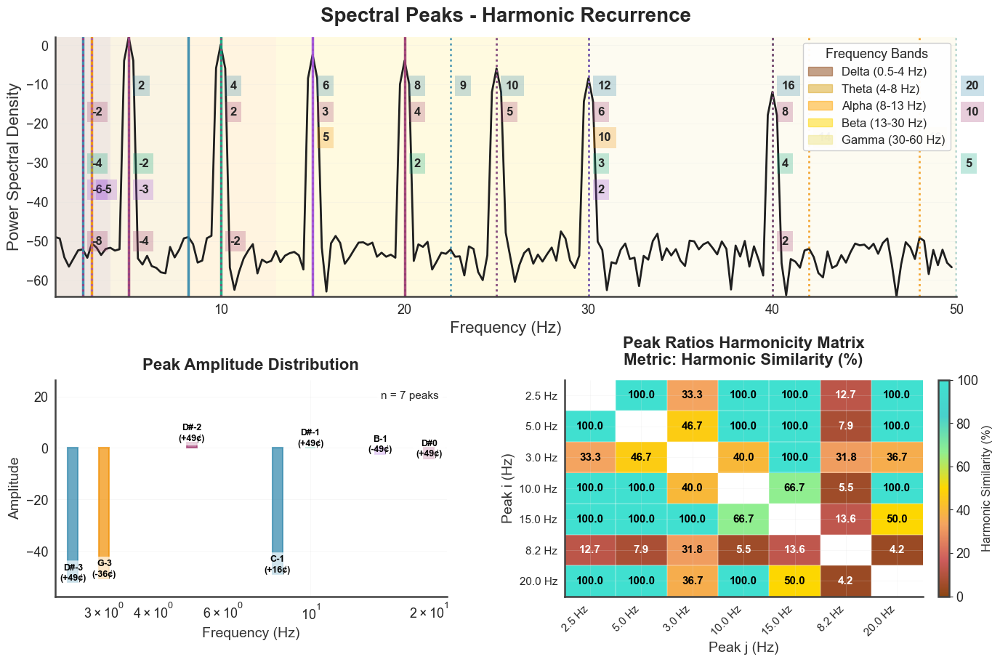
Same plot for the JI chord and the EEG-like signal:
bt_B.plot_peaks(xmin=1, xmax=50, show_matrix=True)
plt.show()
C:\Users\skite\Documents\Github\biotuner\biotuner\plot_utils.py:1138: UserWarning: This figure includes Axes that are not compatible with tight_layout, so results might be incorrect.
plt.tight_layout()
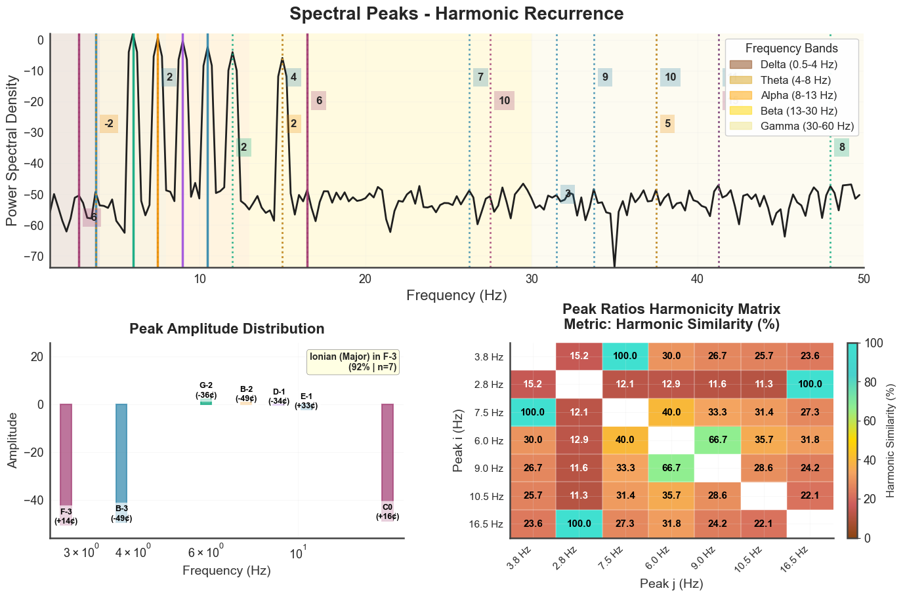
bt_C.plot_peaks(xmin=1, xmax=50, show_matrix=True)
plt.show()
C:\Users\skite\Documents\Github\biotuner\biotuner\plot_utils.py:1138: UserWarning: This figure includes Axes that are not compatible with tight_layout, so results might be incorrect.
plt.tight_layout()
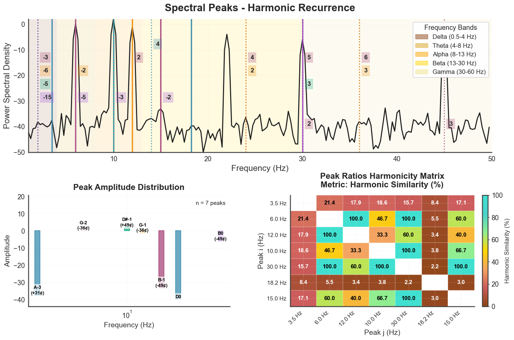
The individual panels are also exposed as standalone methods, useful for embedding a single panel in a custom layout.
# spectrum-only view
bt_A.plot_peaks_spectrum(xmin=1, xmax=50)
plt.show()
# amplitude bars with musical-note labels
bt_B.plot_peaks_amplitude(xmin=1, xmax=50)
plt.show()
# harmonicity matrix between peak pairs
bt_C.plot_peaks_matrix(metric="harmsim")
plt.show()
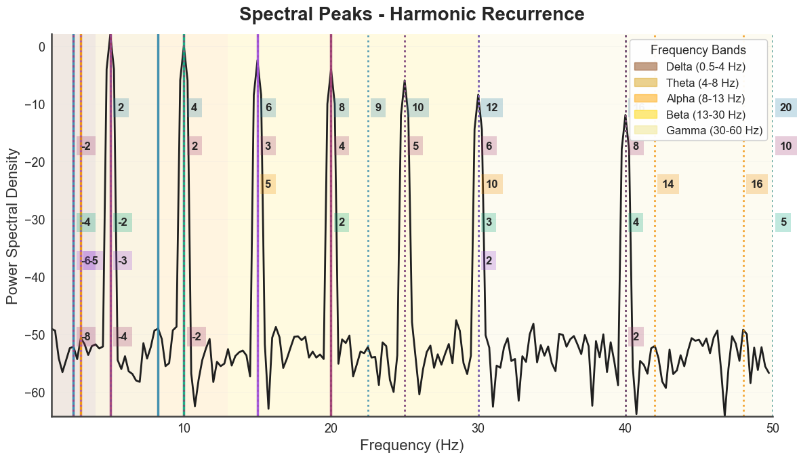
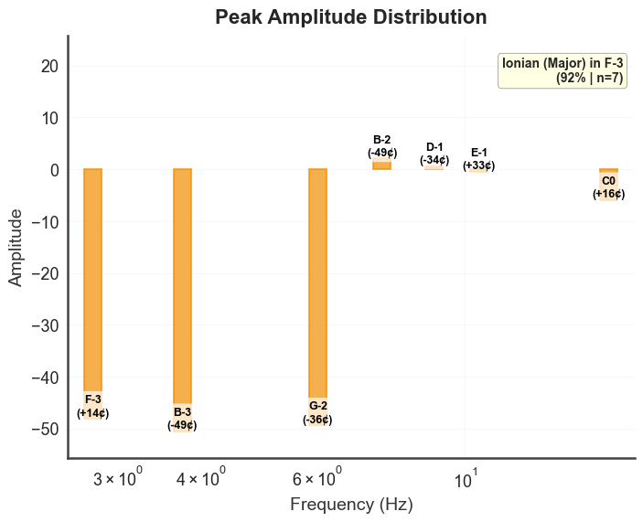
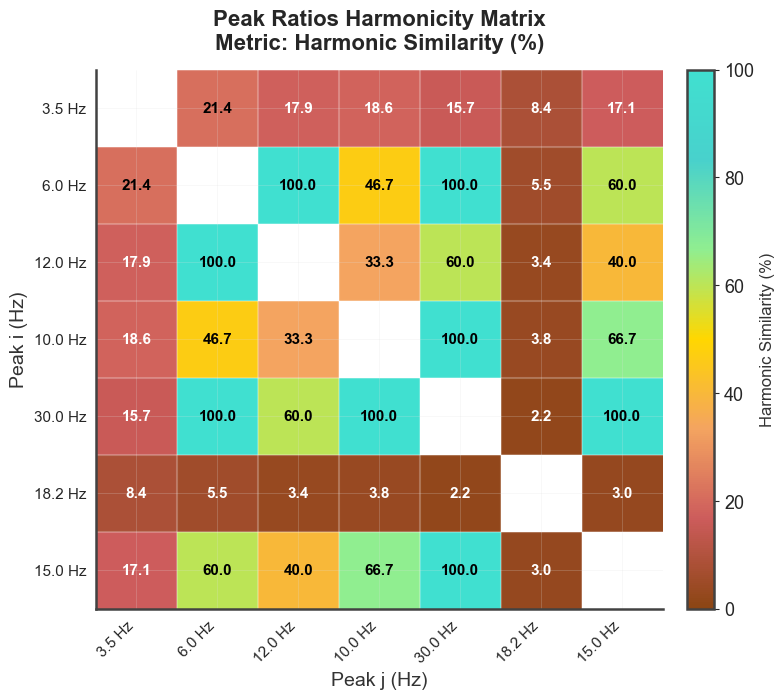
3. Tuning visualization#
plot_tuning() is the workhorse for scale visualization. With
panels=4, show_source_curve=True it produces a four-panel summary: source
curve at the top, then scale steps, consonance matrix, and step-size intervals.
The tuning argument selects which scale to display
(peaks_ratios, diss_curve, harm_tuning, harm_fit_tuning,
euler_fokker, HE).
bt_A.plot_tuning(tuning="diss_curve", metric="harmsim",
panels=4, show_source_curve=True)
plt.show()
C:\Users\skite\Documents\Github\biotuner\biotuner\plot_utils.py:2348: UserWarning: This figure includes Axes that are not compatible with tight_layout, so results might be incorrect.
plt.tight_layout()
C:\Users\skite\Documents\Github\biotuner\biotuner\plot_utils.py:2497: UserWarning: This figure includes Axes that are not compatible with tight_layout, so results might be incorrect.
plt.tight_layout()
C:\Users\skite\Documents\Github\biotuner\biotuner\plot_utils.py:2571: UserWarning: This figure includes Axes that are not compatible with tight_layout, so results might be incorrect.
plt.tight_layout()
C:\Users\skite\Documents\Github\biotuner\biotuner\plot_utils.py:2724: UserWarning: This figure includes Axes that are not compatible with tight_layout, so results might be incorrect.
plt.tight_layout()
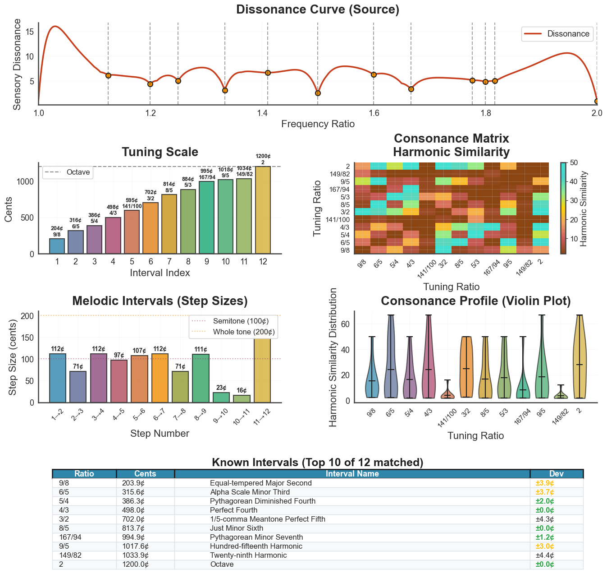
bt_B.plot_tuning(tuning="peaks_ratios", metric="harmsim",
panels=4, show_source_curve=True)
plt.show()
C:\Users\skite\Documents\Github\biotuner\biotuner\plot_utils.py:2348: UserWarning: This figure includes Axes that are not compatible with tight_layout, so results might be incorrect.
plt.tight_layout()
C:\Users\skite\Documents\Github\biotuner\biotuner\plot_utils.py:2497: UserWarning: This figure includes Axes that are not compatible with tight_layout, so results might be incorrect.
plt.tight_layout()
C:\Users\skite\Documents\Github\biotuner\biotuner\plot_utils.py:2571: UserWarning: This figure includes Axes that are not compatible with tight_layout, so results might be incorrect.
plt.tight_layout()
C:\Users\skite\Documents\Github\biotuner\biotuner\plot_utils.py:2724: UserWarning: This figure includes Axes that are not compatible with tight_layout, so results might be incorrect.
plt.tight_layout()
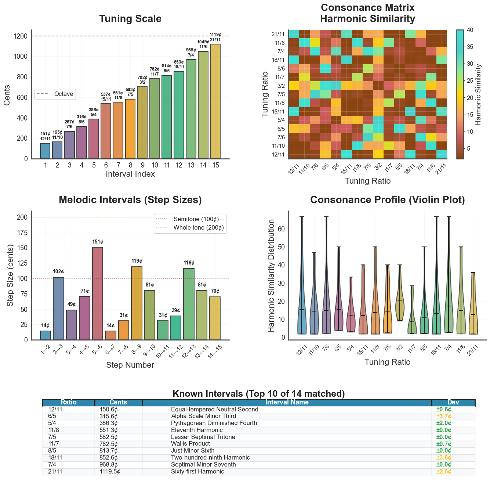
Each panel is also available individually:
bt_A.plot_tuning_scale(tuning="diss_curve")
plt.show()
bt_A.plot_tuning_matrix(tuning="diss_curve", metric="harmsim")
plt.show()
bt_A.plot_tuning_intervals(tuning="diss_curve")
plt.show()
bt_A.plot_tuning_consonance_profile(tuning="diss_curve", metric="harmsim")
plt.show()
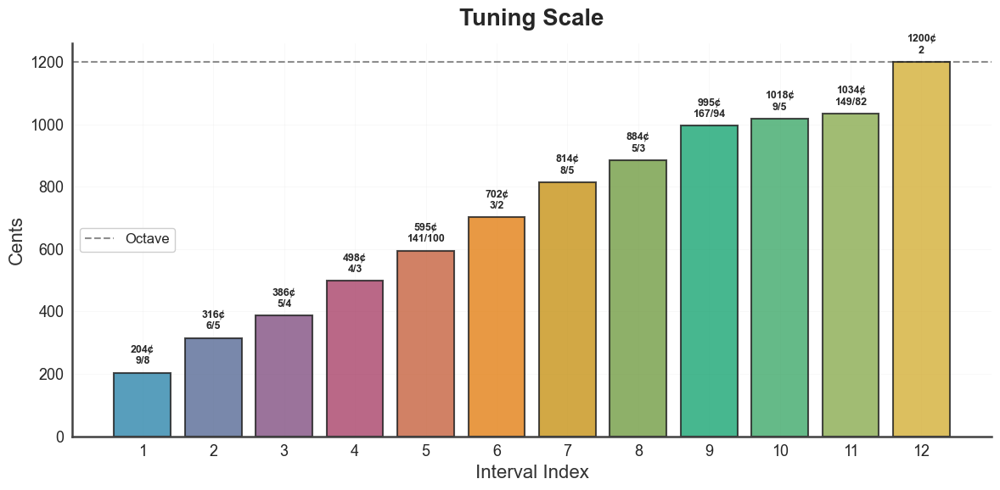
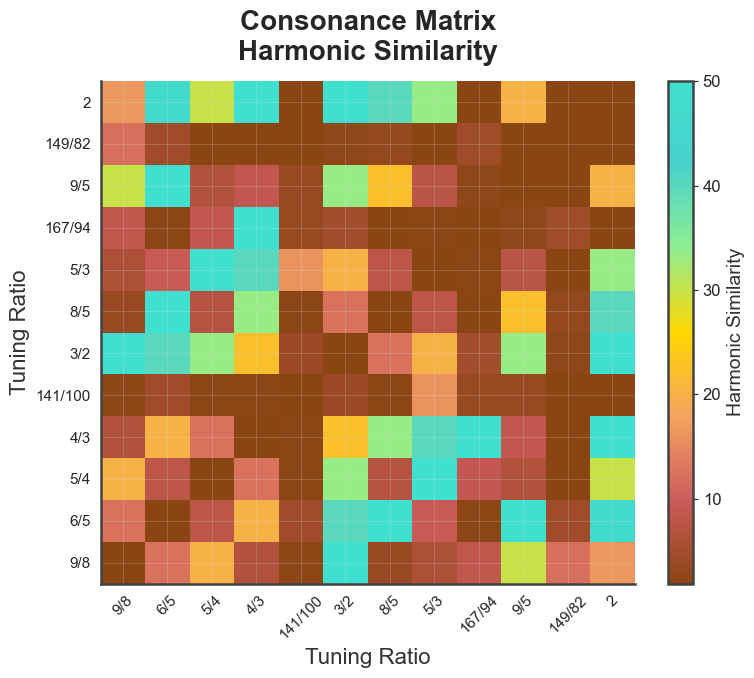
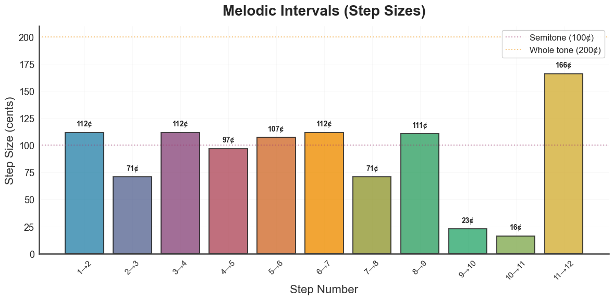
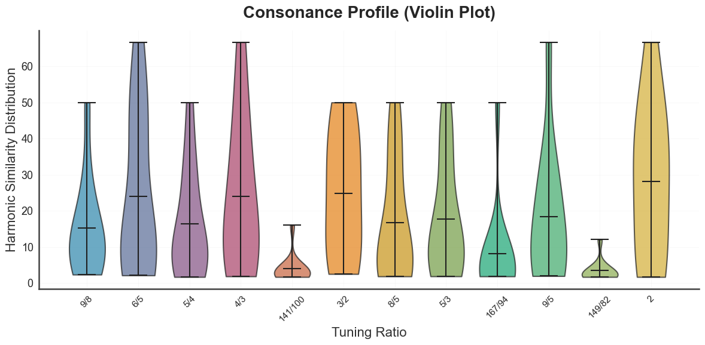
plot_tuning_curve renders the underlying source curve (dissonance or
harmonic entropy) with detected minima highlighted.
bt_A.plot_tuning_curve(curve_type="dissonance")
plt.show()
bt_B.plot_tuning_curve(curve_type="dissonance")
plt.show()
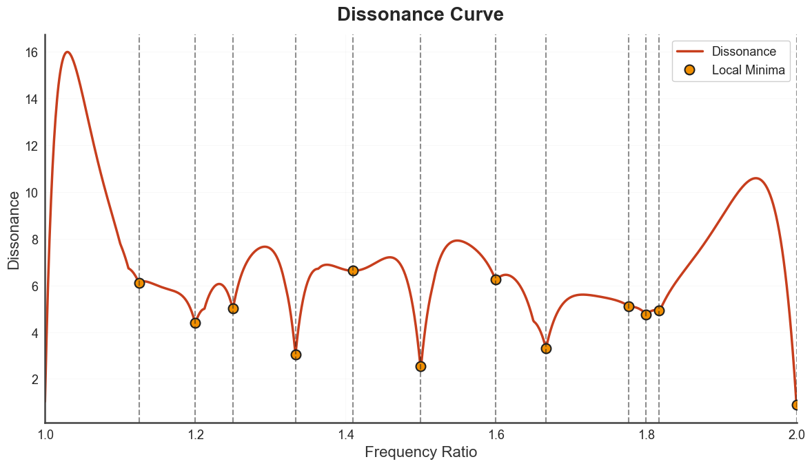
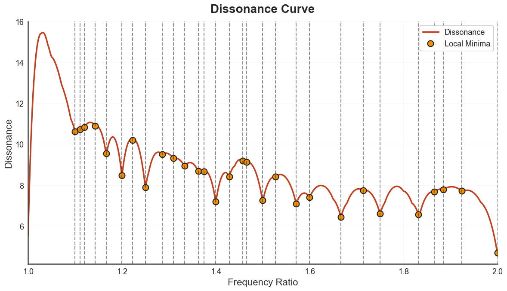
plot_tuning_interval_table annotates each scale step with the closest
named just-intonation interval, within a tolerance you set.
bt_A.plot_tuning_interval_table(tuning="diss_curve",
max_denom=64, tolerance_cents=15)
plt.show()
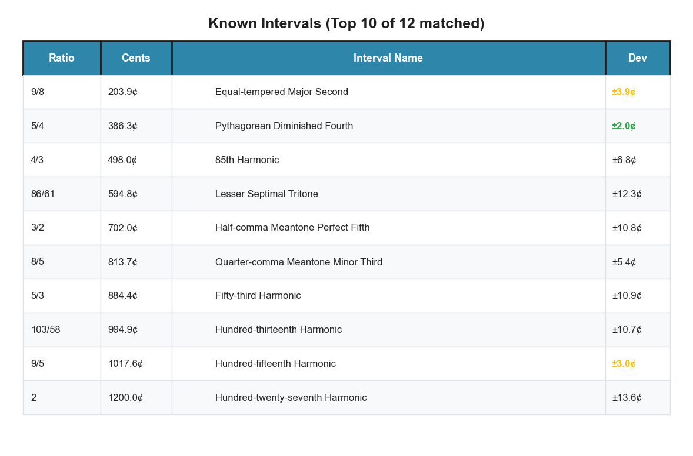
4. Harmonic-fit diagnostics#
plot_harmonic_fit() produces a 2×2 panel showing how well the spectral
peaks fit a shared harmonic series. Top-left: PSD with peak markers and
extension positions; top-right: harmonic positions per peak; bottom-left:
harmonic-fit network (which harmonic of which peak coincides with which other
peak); bottom-right: connectivity matrix.
bt_A.plot_harmonic_fit(n_harm=15, harm_bounds=0.5)
plt.show()
C:\Users\skite\Documents\Github\biotuner\biotuner\plot_utils.py:3884: UserWarning: This figure includes Axes that are not compatible with tight_layout, so results might be incorrect.
plt.tight_layout()
C:\Users\skite\Documents\Github\biotuner\biotuner\plot_utils.py:3990: UserWarning: This figure includes Axes that are not compatible with tight_layout, so results might be incorrect.
plt.tight_layout()
C:\Users\skite\Documents\Github\biotuner\biotuner\plot_utils.py:4221: UserWarning: This figure includes Axes that are not compatible with tight_layout, so results might be incorrect.
plt.tight_layout()
C:\Users\skite\Documents\Github\biotuner\biotuner\plot_utils.py:4366: UserWarning: This figure includes Axes that are not compatible with tight_layout, so results might be incorrect.
plt.tight_layout(rect=[0, 0, 1, 0.96])
c:\Users\skite\miniconda3\envs\biotuner_env\Lib\site-packages\IPython\core\pylabtools.py:170: UserWarning: Glyph 8733 (\N{PROPORTIONAL TO}) missing from font(s) Arial.
fig.canvas.print_figure(bytes_io, **kw)
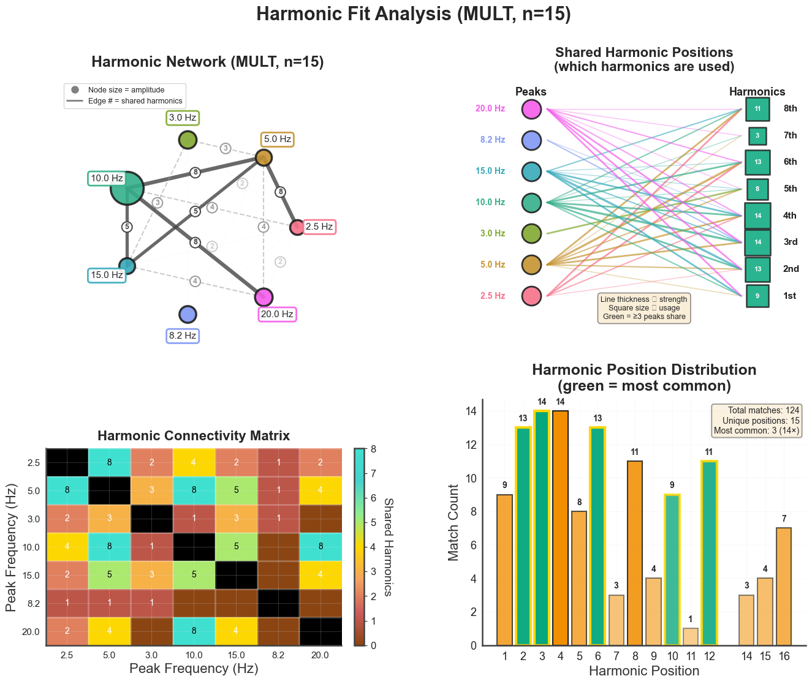
bt_B.plot_harmonic_fit(n_harm=15, harm_bounds=0.5)
plt.show()
C:\Users\skite\Documents\Github\biotuner\biotuner\plot_utils.py:3884: UserWarning: This figure includes Axes that are not compatible with tight_layout, so results might be incorrect.
plt.tight_layout()
C:\Users\skite\Documents\Github\biotuner\biotuner\plot_utils.py:3990: UserWarning: This figure includes Axes that are not compatible with tight_layout, so results might be incorrect.
plt.tight_layout()
C:\Users\skite\Documents\Github\biotuner\biotuner\plot_utils.py:4221: UserWarning: This figure includes Axes that are not compatible with tight_layout, so results might be incorrect.
plt.tight_layout()
C:\Users\skite\Documents\Github\biotuner\biotuner\plot_utils.py:4366: UserWarning: This figure includes Axes that are not compatible with tight_layout, so results might be incorrect.
plt.tight_layout(rect=[0, 0, 1, 0.96])
c:\Users\skite\miniconda3\envs\biotuner_env\Lib\site-packages\IPython\core\pylabtools.py:170: UserWarning: Glyph 8733 (\N{PROPORTIONAL TO}) missing from font(s) Arial.
fig.canvas.print_figure(bytes_io, **kw)
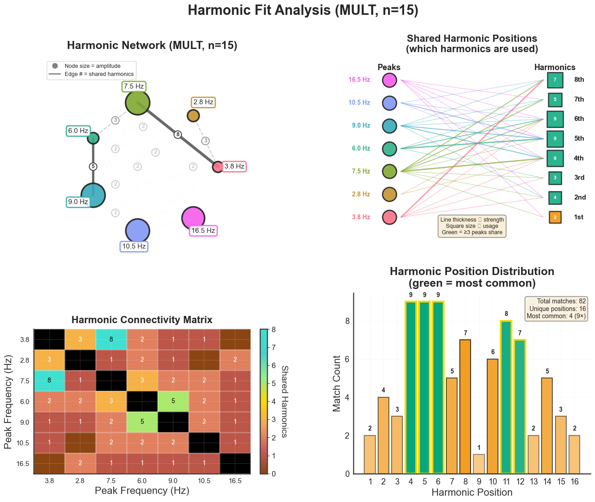
Each subview is exposed as its own method:
bt_A.plot_harmonic_fit_network(n_harm=15, harm_bounds=0.5)
plt.show()
bt_A.plot_harmonic_fit_matrix(n_harm=15, harm_bounds=0.5)
plt.show()
bt_A.plot_harmonic_fit_positions(n_harm=15, harm_bounds=0.5)
plt.show()
bt_A.plot_harmonic_position_mappings(n_harm=15)
plt.show()
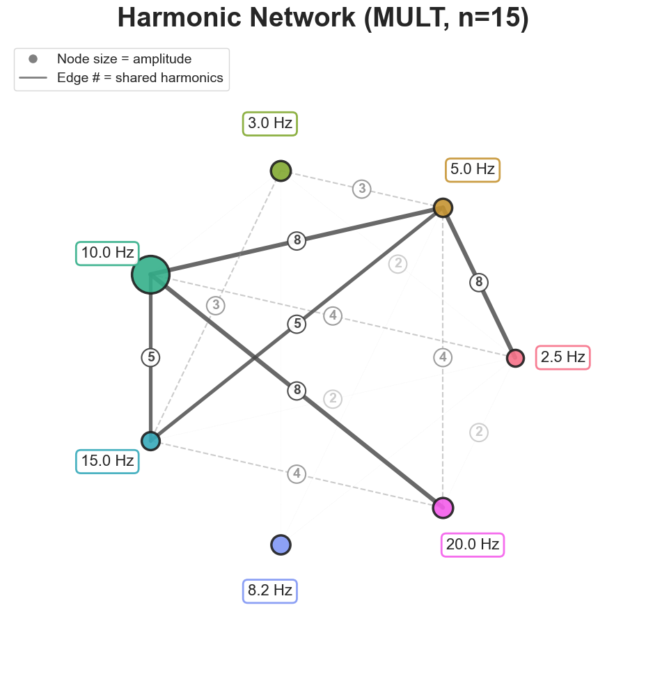
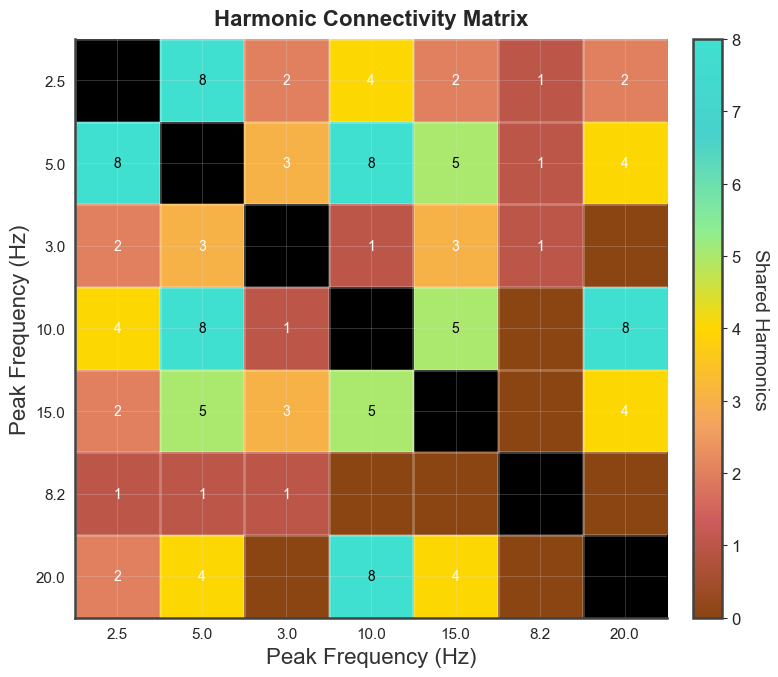
C:\Users\skite\Documents\Github\biotuner\biotuner\plot_utils.py:4221: UserWarning: Glyph 8733 (\N{PROPORTIONAL TO}) missing from font(s) Arial.
plt.tight_layout()
c:\Users\skite\miniconda3\envs\biotuner_env\Lib\site-packages\IPython\core\pylabtools.py:170: UserWarning: Glyph 8733 (\N{PROPORTIONAL TO}) missing from font(s) Arial.
fig.canvas.print_figure(bytes_io, **kw)
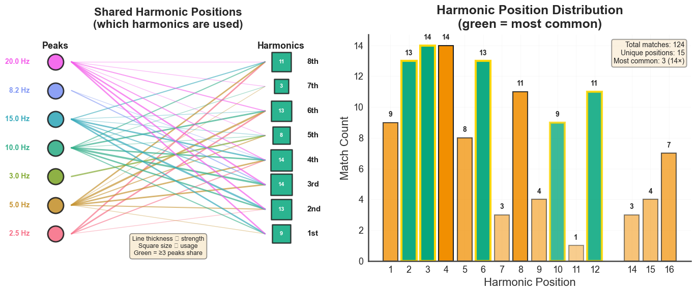
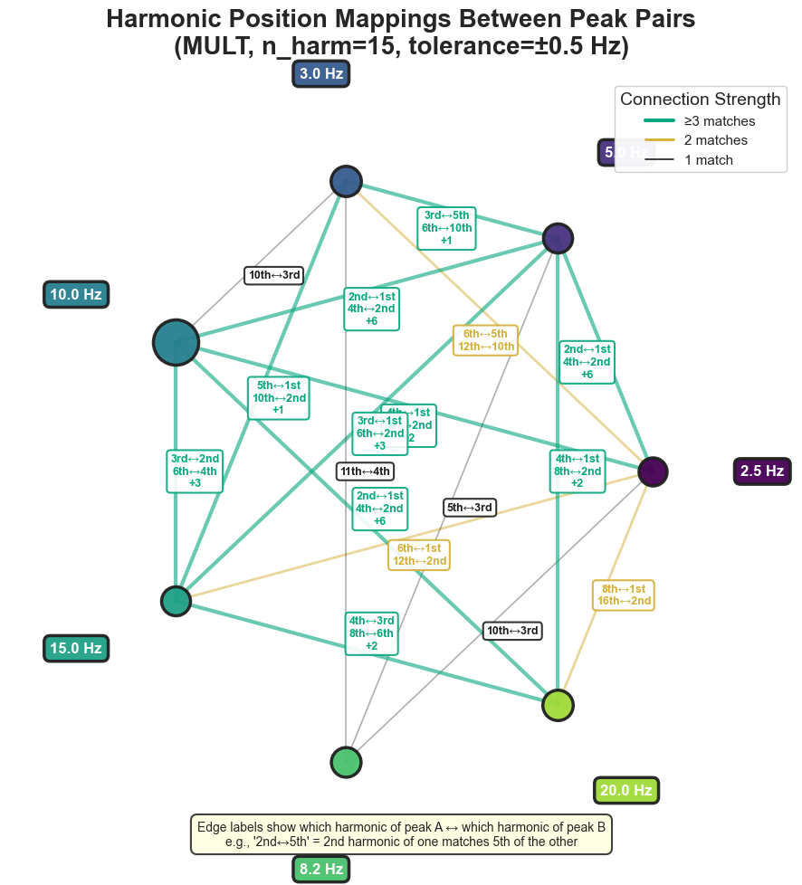
5. Multi-channel dissonance curve#
diss_curve_multi overlays dissonance curves from multiple sources on a
single axis and marks shared minima — useful when looking for tunings that are
consistent across channels or trials.
freqs_list = [bt_A.peaks, bt_B.peaks, bt_C.peaks]
amps_list = [bt_A.amps, bt_B.amps, bt_C.amps]
labels = ["Harmonic stack", "JI chord", "EEG-like"]
plt.figure(figsize=(16, 7))
diss_curve_multi(
freqs_list, amps_list,
labels=labels,
denom=12, max_ratio=2,
n_tet_grid=12,
data_type="Scenario",
)
plt.show()
<Figure size 1600x700 with 0 Axes>
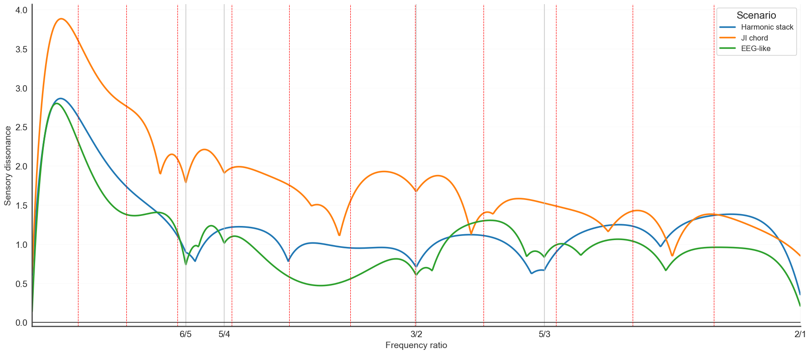
6. Group analysis plots#
BiotunerGroup orchestrates biotuner across many time series and exposes
group-level plots. We build a 24-trial dataset split into two conditions
(harmonic vs inharmonic) so condition-aware plots have something to compare.
N = 12
harmonic_trials = np.array([
make_signal(
[5 + rng.uniform(-0.2, 0.2),
10 + rng.uniform(-0.3, 0.3),
15 + rng.uniform(-0.3, 0.3),
20 + rng.uniform(-0.4, 0.4),
30 + rng.uniform(-0.5, 0.5)],
[1.0, 0.8, 0.6, 0.5, 0.3], noise=0.1,
) for _ in range(N)
])
inharmonic_trials = np.array([
make_signal(
[4 + rng.uniform(0, 1.0),
9 + rng.uniform(0, 1.5),
13 + rng.uniform(0, 2.0),
19 + rng.uniform(0, 2.0),
27 + rng.uniform(0, 2.5)],
[1.0, 0.7, 0.5, 0.4, 0.3], noise=0.15,
) for _ in range(N)
])
group_data = np.vstack([harmonic_trials, inharmonic_trials]) # (24, 8000)
metadata = {"condition": ["harmonic"] * N + ["inharmonic"] * N}
print(f"Group data: {group_data.shape}")
Group data: (24, 8000)
btg = BiotunerGroup(
group_data, sf=sf,
axis_labels=["trial"],
metadata=metadata,
peaks_function="EMD",
precision=0.25,
)
btg.compute_peaks(min_freq=2, max_freq=50, n_peaks=6,
min_harms=2, verbose=False)
btg.compute_metrics()
btg.compute_diss_curve(input_type="peaks", denom=50, max_ratio=2)
summary = btg.summary()
summary.head()
Warning: 1 peaks were removed because they exceeded the maximum frequency of 50 Hz
Warning: 1 peaks were removed because they exceeded the maximum frequency of 50 Hz
Warning: 1 peaks were removed because they exceeded the maximum frequency of 50 Hz
Warning: 1 peaks were removed because they exceeded the maximum frequency of 50 Hz
Warning: 1 peaks were removed because they exceeded the maximum frequency of 50 Hz
Warning: 1 peaks were removed because they exceeded the maximum frequency of 50 Hz
Warning: 1 peaks were removed because they exceeded the maximum frequency of 50 Hz
Warning: 1 peaks were removed because they exceeded the maximum frequency of 50 Hz
Warning: 1 peaks were removed because they exceeded the maximum frequency of 50 Hz
Warning: 1 peaks were removed because they exceeded the maximum frequency of 50 Hz
Warning: 1 peaks were removed because they exceeded the maximum frequency of 50 Hz
Warning: 1 peaks were removed because they exceeded the maximum frequency of 50 Hz
Warning: 1 peaks were removed because they exceeded the maximum frequency of 50 Hz
Warning: 1 peaks were removed because they exceeded the maximum frequency of 50 Hz
Warning: 1 peaks were removed because they exceeded the maximum frequency of 50 Hz
Warning: 1 peaks were removed because they exceeded the maximum frequency of 50 Hz
Warning: 1 peaks were removed because they exceeded the maximum frequency of 50 Hz
Warning: 1 peaks were removed because they exceeded the maximum frequency of 50 Hz
Warning: 1 peaks were removed because they exceeded the maximum frequency of 50 Hz
Warning: 1 peaks were removed because they exceeded the maximum frequency of 50 Hz
Warning: 1 peaks were removed because they exceeded the maximum frequency of 50 Hz
C:\Users\skite\Documents\Github\biotuner\biotuner\metrics.py:946: RuntimeWarning: divide by zero encountered in scalar divide
harm_temp.append(1 / delta_norm)
| trial | series_idx | condition | n_peaks | peak_freq_mean | peak_amp_mean | peak_freq_std | peak_amp_std | peak_freq_median | peak_amp_median | ... | harm_pos_std | harm_pos_median | harm_pos_min | harm_pos_max | harm_pos_sem | subharm_tension | scale_dissonance | scale_diss_harm_sim | scale_diss_n_steps | common_harm_pos | |
|---|---|---|---|---|---|---|---|---|---|---|---|---|---|---|---|---|---|---|---|---|---|
| 0 | 0 | 0 | harmonic | 4 | 9.250000 | -6.819295 | 6.743052 | 7.603799 | 7.625 | -3.556057 | ... | 3.136877 | 4.0 | 1.0 | 10.0 | 1.402854 | 0.024486 | 0.449587 | 6.318150 | 3 | NaN |
| 1 | 1 | 1 | harmonic | 4 | 8.062500 | -8.153656 | 4.874599 | 10.155705 | 7.500 | -3.625093 | ... | 3.300000 | 5.5 | 1.0 | 11.0 | 1.043552 | 0.0 | 0.510659 | 26.809599 | 4 | NaN |
| 2 | 2 | 2 | harmonic | 4 | 13.500000 | -10.594103 | 6.351673 | 14.275383 | 14.625 | -3.601809 | ... | 2.847696 | 4.5 | 1.0 | 10.0 | 1.006813 | 0.010381 | 0.784228 | 3.835054 | 3 | 1.0 |
| 3 | 3 | 3 | harmonic | 3 | 11.666667 | -2.682947 | 6.371595 | 1.633655 | 9.750 | -2.450868 | ... | 1.247219 | 2.0 | 1.0 | 4.0 | 0.720082 | 0.025528 | 0.264729 | 4.796640 | 3 | NaN |
| 4 | 4 | 4 | harmonic | 4 | 13.875000 | -11.281537 | 6.718677 | 12.805146 | 14.875 | -4.127662 | ... | 2.680951 | 3.0 | 1.0 | 8.0 | 1.340476 | 0.020523 | 0.794818 | 9.734093 | 4 | NaN |
5 rows × 32 columns
Aggregated PSD with individual traces. plot_group_peaks shows the
mean spectrum across trials with per-trial overlays and detected peak
markers.
btg.plot_group_peaks(show_individual=True, xmin=1, xmax=50)
plt.show()
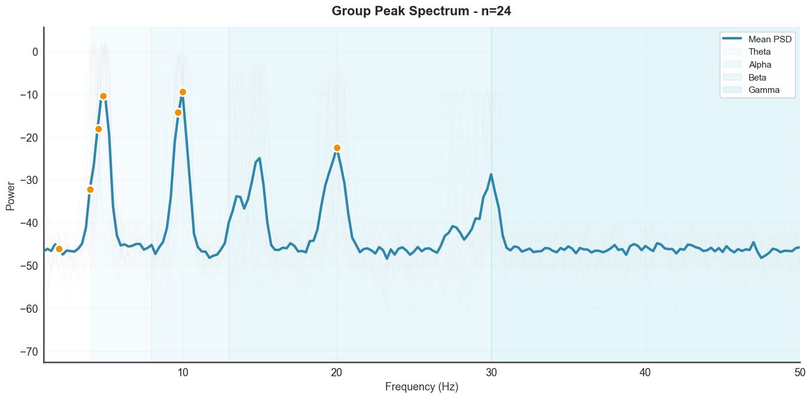
Peak frequency distribution across all trials, with band shading.
btg.plot_peak_distribution(xmin=1, xmax=50)
plt.show()
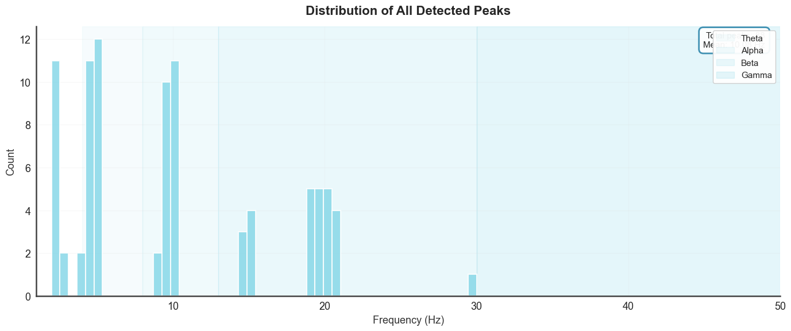
Metric distributions split by condition. Violin plots for several
harmonicity metrics, colored by the condition metadata column.
for metric in ["harmsim", "cons", "tenney"]:
btg.plot_metric_distribution(metric, groupby="condition", kind="violin")
plt.show()
C:\Users\skite\Documents\Github\biotuner\biotuner\biotuner_group.py:1420: FutureWarning:
Passing `palette` without assigning `hue` is deprecated and will be removed in v0.14.0. Assign the `x` variable to `hue` and set `legend=False` for the same effect.
sns.violinplot(data=self.results, x=groupby, y=metric, ax=ax, palette=palette, **kwargs)
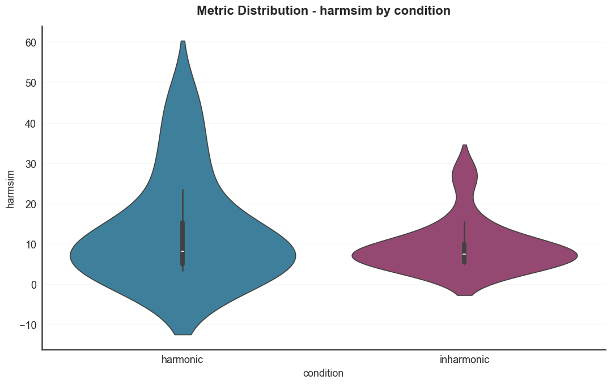
C:\Users\skite\Documents\Github\biotuner\biotuner\biotuner_group.py:1420: FutureWarning:
Passing `palette` without assigning `hue` is deprecated and will be removed in v0.14.0. Assign the `x` variable to `hue` and set `legend=False` for the same effect.
sns.violinplot(data=self.results, x=groupby, y=metric, ax=ax, palette=palette, **kwargs)
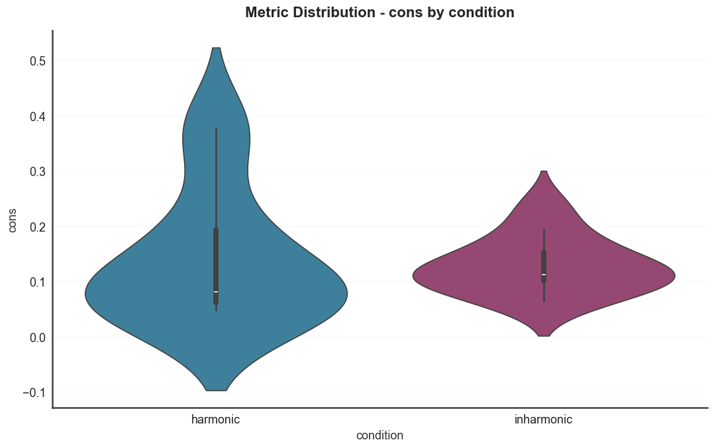
C:\Users\skite\Documents\Github\biotuner\biotuner\biotuner_group.py:1420: FutureWarning:
Passing `palette` without assigning `hue` is deprecated and will be removed in v0.14.0. Assign the `x` variable to `hue` and set `legend=False` for the same effect.
sns.violinplot(data=self.results, x=groupby, y=metric, ax=ax, palette=palette, **kwargs)
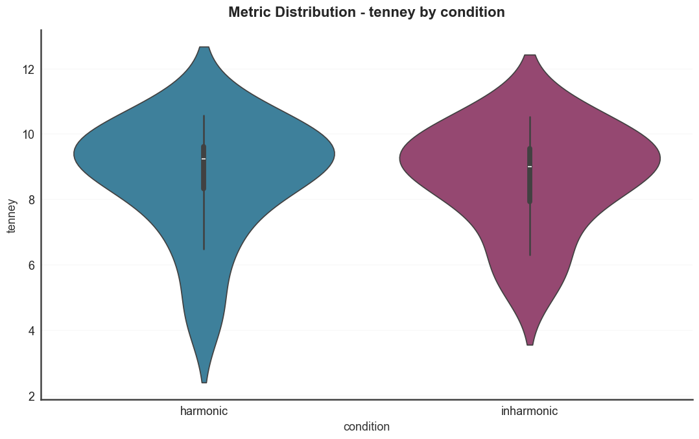
Interval histogram across all derived scales — here using the
dissonance-curve scale. show_common=True overlays vertical lines at common
just-intonation ratios.
btg.plot_interval_histogram("diss_scale", show_common=True, max_denom=64)
plt.show()
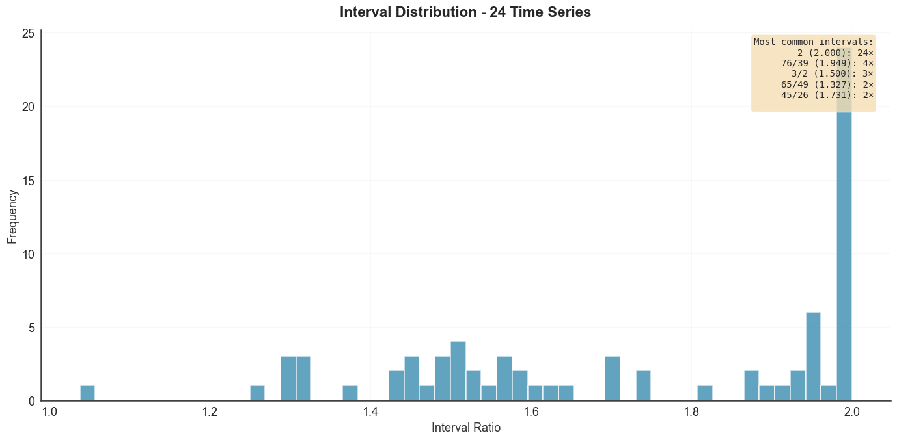
Distribution of scale sizes (number of steps per scale).
btg.plot_scale_size_distribution("diss_scale")
plt.show()
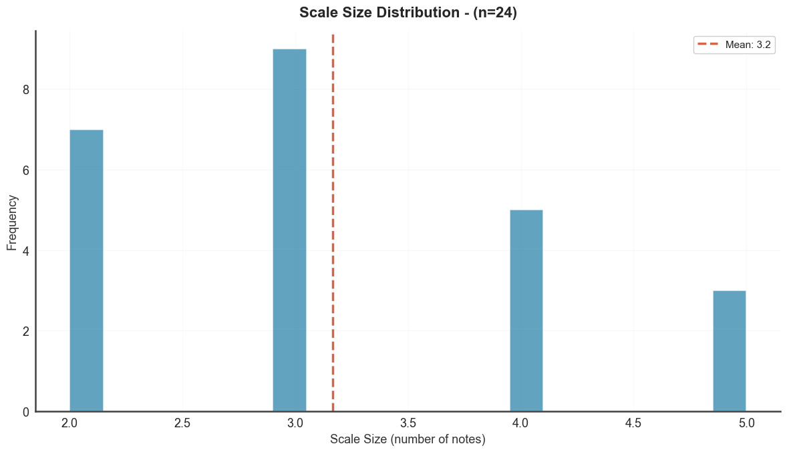
Top 15 most frequent intervals across the group.
btg.plot_common_intervals("diss_scale", top_n=15)
plt.show()
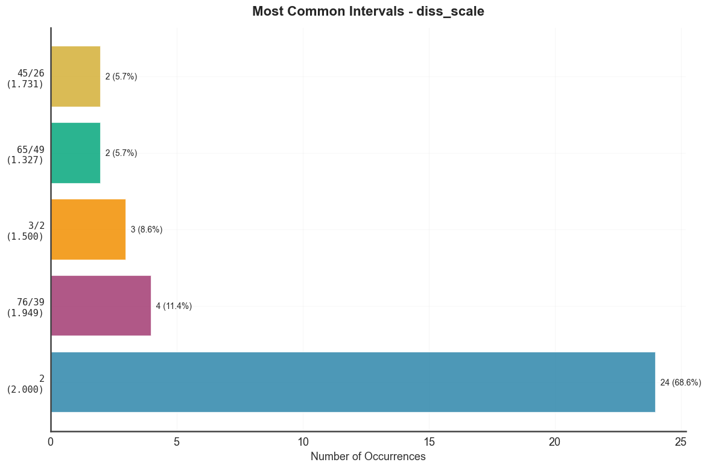
Side-by-side scale comparison for a subset of trials — each row is one trial’s tuning, with steps drawn as vertical ticks on a log axis.
btg.plot_tuning_comparison("diss_scale", indices=list(range(8)))
plt.show()
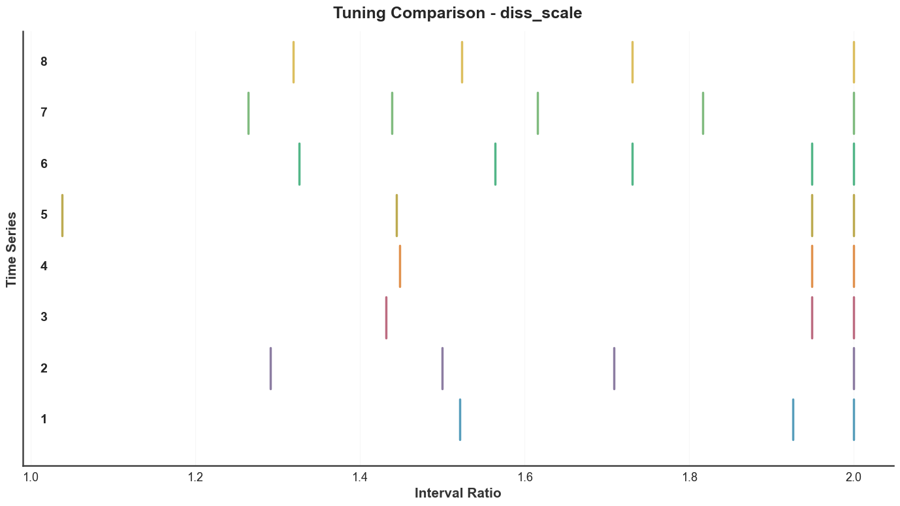
7. 3D group heatmaps#
When the input is 3D (trials × channels × samples), BiotunerGroup
exposes plot_metric_matrix, which renders metric values as a heatmap.
n_trials, n_ch = 8, 6
data_3d = np.array([
[
make_signal(
[5 + rng.uniform(-0.5, 0.5),
10 + rng.uniform(-0.5, 0.5),
20 + rng.uniform(-1, 1)],
[1.0, 0.7, 0.4],
noise=0.1 + 0.05 * tr,
)
for _ in range(n_ch)
]
for tr in range(n_trials)
])
print(f"3D data: {data_3d.shape}")
btg3 = BiotunerGroup(
data_3d, sf=sf,
axis_labels=["trial", "channel"],
peaks_function="harmonic_recurrence",
precision=0.25,
)
btg3.compute_peaks(min_freq=2, max_freq=50, n_peaks=5,
min_harms=2, verbose=False)
btg3.compute_metrics()
btg3.summary().head()
3D data: (8, 6, 8000)
C:\Users\skite\Documents\Github\biotuner\biotuner\metrics.py:946: RuntimeWarning: divide by zero encountered in scalar divide
harm_temp.append(1 / delta_norm)
| trial | channel | series_idx | n_peaks | peak_freq_mean | peak_amp_mean | peak_freq_std | peak_amp_std | peak_freq_median | peak_amp_median | ... | harm_pos_sem | subharm_tension | n_harmonic_recurrence | common_harm_pos | common_harm_pos_mean | common_harm_pos_std | common_harm_pos_median | common_harm_pos_min | common_harm_pos_max | common_harm_pos_sem | |
|---|---|---|---|---|---|---|---|---|---|---|---|---|---|---|---|---|---|---|---|---|---|
| 0 | 0 | 0 | 0 | 5 | 12.25 | -26.493944 | 6.496153 | 21.793078 | 9.75 | -42.435883 | ... | 1.171771 | 0.019481 | 21 | NaN | NaN | NaN | NaN | NaN | NaN | NaN |
| 1 | 0 | 1 | 1 | 5 | 8.90 | -26.447676 | 2.866182 | 21.615260 | 8.00 | -43.653405 | ... | 0.964203 | 0.014328 | 22 | NaN | NaN | NaN | NaN | NaN | NaN | NaN |
| 2 | 0 | 2 | 2 | 5 | 13.35 | -26.588977 | 14.084211 | 21.891383 | 8.25 | -41.786047 | ... | 1.030776 | 0.0 | 25 | NaN | NaN | NaN | NaN | NaN | NaN | NaN |
| 3 | 0 | 3 | 3 | 5 | 8.95 | -26.379970 | 3.508561 | 21.781310 | 8.50 | -43.721270 | ... | 1.030776 | 0.03544 | 25 | NaN | NaN | NaN | NaN | NaN | NaN | NaN |
| 4 | 0 | 4 | 4 | 5 | 9.35 | -35.251479 | 5.791373 | 18.684407 | 8.00 | -43.279380 | ... | 1.006813 | 0.002496 | 27 | 5.0 | NaN | NaN | NaN | NaN | NaN | NaN |
5 rows × 36 columns
btg3.plot_metric_matrix(metric="harmsim")
plt.show()
btg3.plot_metric_matrix(metric="cons")
plt.show()
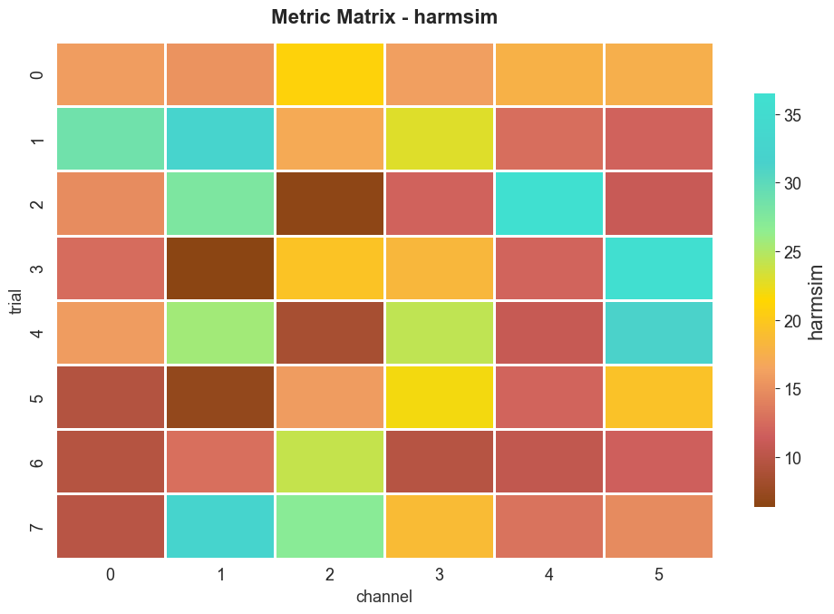
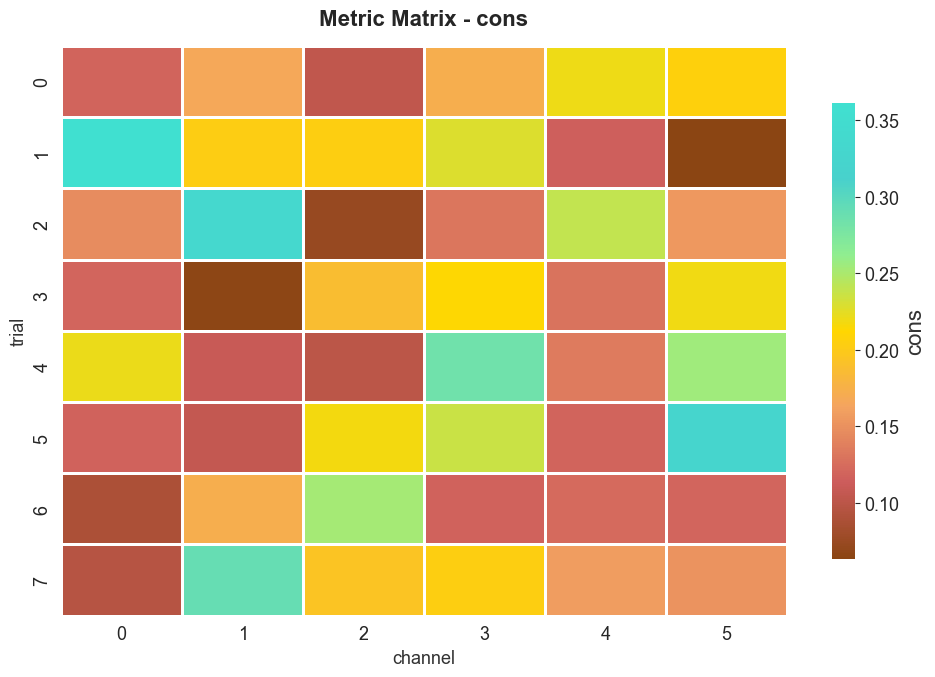
This walk-through covers the public plotting surface of biotuner. For the underlying analysis (peak extraction, tuning derivation, dissonance curve computation), see the Peaks extraction, Scale construction, and BiotunerGroup docs.